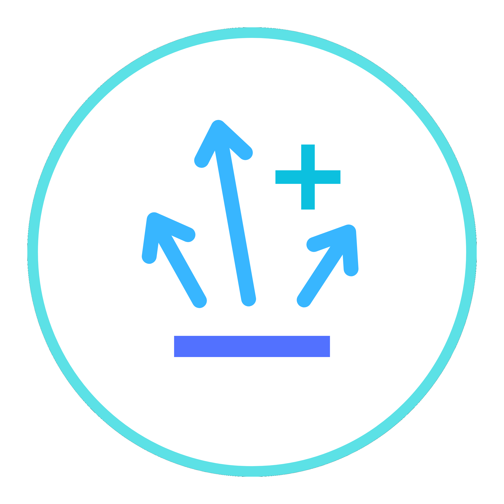

Tous nos services de réparation


Vos avantages
Chez Wayifix, nous apprécions votre confiance en nous pour réparer vos appareils précieux. Pour vous remercier, nous avons un programme de parrainage gagnant-gagnant : pour chaque client que vous nous envoyez, vous recevrez un bon de réduction de 5€ sur votre prochaine réparation ou achat chez nous. Et c'est cumulable ! Invitez autant de clients que vous le souhaitez, jusqu'à atteindre un maximum de 50€ de réduction. Alors, n'hésitez pas à parler de nous à vos amis et à votre famille, et profitez de cette offre exclusive pour économiser sur vos prochains achats chez Wayifix.
Fais un don de téléphones
Tu as des vieux téléphones qui trainent chez toi ? Ne les jette pas, donne-les plutôt ! Chez Wayifix, nous collectons les téléphones usagés pour les réparer et baisser leur prix à la revente. Ton don pourrait aider une personne à rester connectée avec sa famille et ses amis, ou à trouver un emploi. Tu peux déposer tes téléphones directement dans un point relais avec notre adresse dessus, ou nous contacter pour organiser un ramassage à domicile. Ensemble, faisons une différence pour notre communauté !
Points forts
Wayifix est le choix idéal pour les personnes qui cherchent un service de qualité à des prix abordables. Nous proposons des forfaits de réparation qui incluent toutes les pièces nécessaires pour réparer votre téléphone, ainsi qu'une garantie sur les pièces et les travaux effectués. Nous proposons également des services de déblocage pour les téléphones verrouillés avec un mot de passe, pour les personnes qui souhaitent utiliser leur téléphone et repartir de zéro.

Nouvelles informations
Wayifix va bientôt proposer un service de réparation à domicile pour les clients qui ne peuvent pas se déplacer dans le magasin. Cela vous permettra de faire réparer votre téléphone sans même avoir à quitter votre maison, ce qui est unique parmi les magasins de téléphonie.
Don pour l'entreprise
As-tu déjà réfléchi à la façon dont tu pourrais aider à soutenir une entreprise émergente ? Chez Wayifix, nous avons besoin de ton aide pour financer les frais liés à la création de notre entreprise. Chaque contribution, aussi petite soit-elle, peut faire une grande différence. Ton aide nous permettra d'offrir des services de qualité et de contribuer à notre communauté. Nous acceptons les dons par PayPal, ou en personne. Rejoins-nous et ensemble, construisons un avenir meilleur pour notre communauté.